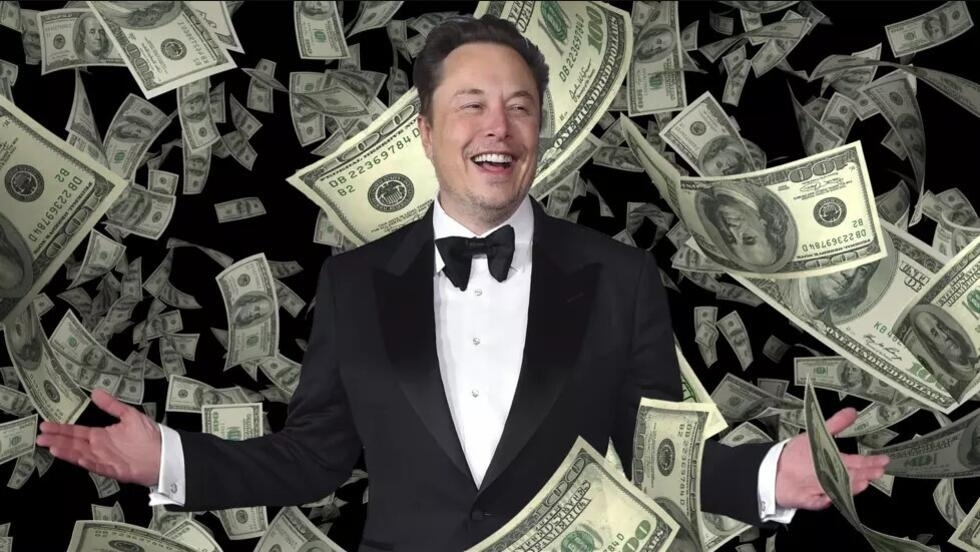

Elon Reeve Musk, es un empresario, inversor y magnate sudafricano que también posee las nacionalidades canadiense y estadounidense. Es el fundador, consejero delegado e ingeniero en jefe de SpaceX; inversor ángel, director general y arquitecto de productos de Tesla, Inc.; fundador de The Boring Company; cofundador de Neuralink y OpenAI, aunque ya no tiene más participación en esta última por desacuerdos en el rumbo de la empresa. Además de ser el director de tecnología de X Corp.
Juventud de Elon Musk
Musk nació y se crío en una rica familia de Pretoria (Sudáfrica) el 28 de junio de 1971. Su madre es canadiense y su padre un sudafricano blanco. Estudió brevemente en la Universidad de Pretoria antes de trasladarse a Canadá a los 17 años. Se matriculó en la Universidad de Queen y se trasladó a la Universidad de Pensilvania dos años después, donde se graduó en Economía y Física. En 1995 se trasladó a California para asistir a la Universidad Stanford, pero en su lugar decidió seguir una carrera empresarial, cofundando la empresa de software web Zip2 con su hermano Kimbal. La empresa fue adquirida por Compaq por 307 millones de dólares en 1999. Ese mismo año, Musk cofundó el banco en línea X.com, que se fusionó con Confinity en 2000 para formar PayPal. La empresa fue comprada por eBay en 2002 por 1500 millones de dólares.
Empresas
En 2002, Musk fundó SpaceX, fabricante aeroespacial y empresa de servicios de transporte espacial, de la que es CEO e ingeniero jefe. En 2003, se unió al fabricante de vehículos eléctricos Tesla Motors, Inc. (ahora Tesla, Inc.) como presidente y arquitecto de productos, convirtiéndose en su consejero delegado en 2008. En 2006, ayudó a crear SolarCity, una empresa de servicios de energía solar que posteriormente fue adquirida por Tesla y se convirtió en Tesla Energy. En 2015, cofundó OpenAI, una empresa de investigación sin ánimo de lucro que promueve la inteligencia artificial amigable. En 2016, cofundó Neuralink, una empresa de neurotecnología centrada en el desarrollo de interfaces cerebro-ordenador, y fundó The Boring Company, una empresa de construcción de túneles. También acordó la compra de la importante red social estadounidense Twitter en 2022 por 44 000 millones de dólares. Musk también ha propuesto el hyperloop. En noviembre de 2021, el director general de Tesla fue la primera persona de la historia en acumular una fortuna de 300 000 millones de dólares.9
Controversias
Ha sido criticado por hacer declaraciones poco científicas y controvertidas. En 2018, fue demandado por la Comisión de Bolsa y Valores de Estados Unidos (SEC) por tuitear falsamente que había conseguido financiación para una adquisición privada de Tesla. Llegó a un acuerdo con la SEC pero no admitió su culpabilidad, renunciando temporalmente a su presidencia y aceptando limitaciones en su uso de Twitter. En 2019, ganó un juicio por difamación presentado contra él por un espeleólogo británico que asesoró en el rescate de la cueva de Tham Luang. Musk también ha sido criticado por difundir información errónea sobre la pandemia de COVID-19 y teorías de conspiración; y por sus otras opiniones sobre asuntos como la inteligencia artificial, las criptomonedas y el transporte público.
Competencia de Patrimonio
La revista Forbes publicó el listado de las personas más ricas del mundo en este 2024. Bernard Arnault (75 años) fue nombrado el hombre más rico del mundo este año, con una fortuna estimada en 226.200 millones de dólares. Arnault es el máximo responsable del gigante del lujo LVMH, que incluye empresas como Louis Vuitton y Dior.
Según el informe, ahora hay más milmillonarios que nunca: son 2.781 en total en el mundo, 141 más que el año pasado y 26 más que el récord establecido en 2021. Con respecto al país del mundo con más superricos, el primer puesto se lo lleva Estados Unidos, con 813 milmillonarios.
| Nombre | Pais | Patrimonio (en millones de USD) |
|---|---|---|
| Bernar Arnault | Francia | 226,2 |
| Jeff Bezos | Estados Unidos | 198,4 |
| Elon Musk | Estados Unidos | 195,3 |
| Mark Zuckenberg | Estados Unidos | 170,3 |
| Larry Ellison | Estados Unidos | 155,2 |
Calculado en base a los precios de las acciones y los tipos de cambio del 1 de Abril de 2024.
Fuente: Forbes
SUSCRIBETE PARA RECIBIR MAS NOTICIAS
SpaceX es una empresa de transporte espacial, turismo espacial y fabricación de naves espaciales, fundada por Elon Musk, con sede en los Estados Unidos. Es una de las empresas más conocidas que propone viajes espaciales comerciales en un futuro próximo y una de las pocas empresas privadas que ha logrado un vuelo espacial exitoso.
Space X

Tesla, Inc. es una empresa estadounidense con sede en Austin, Texas, liderada por Elon Musk, la cual diseña, fabrica y vende automóviles eléctricos, componentes para la propulsión de vehículos eléctricos, techos solares, instalaciones solares fotovoltaicas y baterías domésticas.
Tesla Cybertruck
Neuralink Neuralink Corporation es una empresa de neurotecnología estadounidense especializada en el desarrollo de interfaces cerebro-computadora, implantables, también conocidos como Brain-Computer Interfaces o tecnología BCI, fundada por Elon Musk.